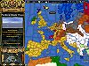

De: La Frikipedia, la enciclopedia extremadamente seria.
De: La Frikipedia, la enciclopedia extremadamente seria. De: La Frikipedia, la enciclopedia extremadamente seria.

|
FRIKIPEDIA QUIERE QUE ESTA DEFINICIÓN
PASE A SER UN ARTÍCULO FRIKIPÉDICO La información contenida en este artículo es una mínima parte de su jugo total, así que ponte los guantes, saca el tupperwere y empieza a exprimir el tema. Si lo haces serás recompensado con una galleta en almíbar y algo más. |
| De la serie Países del planeta tierra: | |||||
| Moguntiacum | |||||
|---|---|---|---|---|---|
| |||||
| Lema: Hic est enim calix sanguinem meam | |||||
| Himno: Penitenciagite, homo homini lupus, amanita faloides, opus dei vade retro, superavit de incognito, habitus delinquendi...
| |||||
| 
| |||||
| Capital | Antioquía | ||||
| Mayor ciudad | Trebisonda | ||||
| Lenguas oficiales | Latín y alemán antiguo | ||||
| Gobierno | Imperio (Argentina) | ||||
| Imperator | Ruperto I | ||||
| Área | 19.846km2y 20m2 en sus colonias en Chafarinas | ||||
| Población | 4.059.604 hab. en sus buenos tiempos | ||||
| Moneda | Denario de oro magunciano | ||||
| Zona horaria | no usan | ||||
| Dominio Internet | .mag | ||||
| Código telefónico | 007
| ||||
| annus horribilis, detritus por Tutatis, tutto Pavarotti. | |||||
Maguncia es el nombre que recibia un país que ya no existe hace la tira de años. Recientes investigaciones logradas grácias a la secreta invención de la Máquina del tiempo han ayudado a lograr ésta exclusiva para la Frikipedia.
Maguncia llegó a ser el imperio más grande de todo el mundo conocido. Empezó como una simple aldea, en la que el jefe de ésta, Maguncio Rodriguez, se convirtió mediante saqueos y estafas en el más rico de la región. Con el dinero que consiguió, compró todas las aldeas de las cercanias y las unificó convirtiéndolas en una única ciudad a la que llamó Maguncia en honor a su megalomanía. Poco a poco fue reuniendo un gigantesco ejército y se puso a conquistar el mundo entero.
La historia de Maguncia llegó a su fin un dia que se incendió un establo de la ciudad. Las gentes eran tan guarras que no sabian lo que era el agua, y no pudieron apagar el fuego, el cual se extendió por toda la ciudad, arrasándola por completo. Para más inri, el fuego asustó a una manada de elefantes que pasaban por ahí, provocando una estampida que destruyó las pocas cenizas que quedaban, y de paso a los habitantes. Y por si fuera poco, una plaga de garrapatas devoradoras de civilizaciones antiguas hicieron acto de presencia años después, comiéndose todo futuro dato o encuentro arqueológico sobre uno de los imperios más grandes de la historia.
Todos ellos fueron feroces, tiranos y horrendos emperadores que subyugaron a su pueblo y arrasaron villas y civilizaciones enteras. Cabe destacar que ninguno de ellos tuvo jamás descendencia, dada su nula capacidad para atraer a las mozas, amén de sus problemas erectiles y su fealdad.
Autor(es):